Cet article, consacré aux phénomènes climatiques aujourd’hui constatés dont le réchauffement de l’atmosphère terrestre apparaît comme l’origine, constitue une synthèse proposée en deux parties aisément accessibles par chacun, quel que soit le niveau de connaissances générales.
Au-delà de l’hypothèse communément admise se référant à l’augmentation de la teneur en gaz à effet de serre comme le dioxyde de carbone (CO2) et le méthane (CH4) dont les conséquences ne sauraient, au moins pour l’heure, être remises en cause, la présente étude développe une autre hypothèse basée sur l’albédo terrestre et la teneur en eau de l’atmosphère.
Par conséquent, suivant la rapidité actuelle de la déforestation terrestre dont africaine en particulier, cet opuscule met en évidence les redoutables effets qui sont relativement immédiats par suite de l’évolution concomitante du rayonnement infrarouge en surface du sol et dans l’atmosphère conduisant à un déséquilibre thermique en surface de la planète.
Ce document est donc le fruit de l’alliance entre les connaissances de l’auteur dans le domaine de l’énergie thermique, celle du pilote d’avions et surtout de planeurs dont le vol tout à fait similaire à celui des grands oiseaux voiliers nécessite de bonnes connaissances en matière de météorologie et d’aérologie.
A l’occasion de ses nombreux voyages en Afrique de l’Ouest, ceci ne pourra le conduire qu’à de nombreux constats, lesquels confortent parfaitement ce qui suit.
Planeur à l’atterrissage. Comme les grands oiseaux voiliers, il évolue dans l’atmosphère suivant les ascendances thermiques exploitées par son pilote, sans consommer d’autre énergie que celle que lui donne la nature. Photo. JMT. 2008
L’énergie mécanique, seule énergie noble, résultant d’un phénomène physique démontré par le physicien français Léonard Sadi Carnot en 1824, démonstration que l’on ne saurait remettre en cause, cette première n’est uniquement le fruit que d’une différence de température et de rien d’autre.
En termes plus clairs, plus des masses d’air à températures de plus en plus différentes et au volume idem entreront en conflit, plus l’énergie mécanique induite par leur variation de masse volumique (ou de densité...) sera importante.
Dans la mesure où cette énergie est dépensée durant un temps relativement court, la puissance croit inversement proportionnellement au temps ce qui conduit directement vers des phénomènes destructeurs en surface du sol au sujet desquels l’Humanité commence à sérieusement se préoccuper face aux conséquences de tous ordres, lesquelles en l’état ne feront que croître.
Suivant le type de civilisation adopté depuis environ deux siècles, sans prises de mesures drastiques et immédiates, tout laisse à penser qu’elle n’en est qu’au début de ses déboires qu’elle ne pourra pas contenir car n’étant pas à la hauteur des phénomènes engendrés.
LA TERRE ET L’ENERGIE
La planète Terre est un astre de type solide, d’un diamètre moyen d’environ 12 700 km. Elle se situe à 150 millions de kilomètres du soleil, autrement dit dans sa proche banlieue ce qui la met à la merci des effets directs des éruptions de l’étoile. Dans le système solaire, il s’agit du seul astre où la vie biologique dont celle de l’Homme, a pu harmonieusement se développer ou subsiste. Quoi que l’on en dise, l’Humanité est aussi vraisemblablement la seule dans une bonne partie de la galaxie.
La vie biologique sur Terre est rendue possible grâce à deux facteurs déterminants, soit :
Une atmosphère dont la composition permet de ne laisser passer que les éléments du rayonnement solaire propres à maintenir la vie biologique (infrarouge, ultraviolet...)
La présence d’eau en quantité très importante puisqu’environ 71 % de la surface du globe sont recouverts par les mers et les océans.
Le soleil illumine la Terre à raison d’environ 1360 W/m2, constante solaire mais qui, dans la réalité, n’est pas si constante que cela... Néanmoins, 70 % sont renvoyés dans le cosmos grâce à l’atmosphère et des 30 % restants, soit environ 450 W /m2, seuls, 2 % sont transformés en énergie mécanique : l’énergie éolienne sous forme de vent.
La température régnant sur Terre est donc le fruit d’un équilibre précis entre le rayonnement infrarouge reçu du soleil sur la croûte terrestre et la chaleur provenant de l’intérieur de l’astre, soit, pour cette dernière 3000 fois moins que celle de l’étoile.
Ainsi, le rôle déterminant du soleil au niveau des conditions de température de l’atmosphère est-il immédiatement mis en évidence.
L’ORIGINE DU SYSTEME SOLAIRE ET DE LA TERRE
La science moderne apprend que l’origine du monde, au moins tel que nous pouvons le percevoir, remonte à un phénomène particulier appelé : big bang. Autrement dit, à un moment donné, en un seul point une colossale et incommensurable quantité d’énergie thermique fut rassemblée, entraînant en toute logique une explosion gigantesque dont petit à petit les gaz se sont condensés au fur et à mesure de leur expansion, donnant ainsi naissance aux étoiles (soleils) et aux planètes dont la Terre, Mars, Vénus...
On retrouve parfaitement ici le phénomène thermique de base dont tout ici-bas dépend et auquel nul ne saurait se soustraire ou échapper d’une quelconque manière.
En effet, toute explosion se traduit par une expansion des gaz et donc par voie de conséquence directe par la création d’énergie mécanique puisqu’il y a déplacement puis in fine, par leur refroidissement. Par exemple, c’est exactement ce qui se produit dans un moteur à combustion interne de véhicule automobile, à gaz, essence ou diesel.
On retrouve la même chose pour un nuage d’orage puisque le soleil chauffant le sol en un lieu donné, la masse volumique de l’air situé au-dessus diminue créant ainsi une colonne ascendante dont l’humidité contenue se condensera au fur et à mesure de son élévation vers les couches plus froides de l’atmosphère.
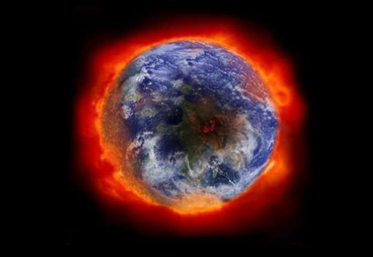Il y a bien à nouveau ici déplacement et donc création d’énergie mécanique à partir de la chaleur et ainsi de suite...
LA REGULATION THERMIQUE DE LA TERRE
Un tel système ne peut évidemment bien fonctionner sans une fine régulation de température permettant à la vie biologique de s’épanouir.
À cette fin, il est alors nécessaire que les conditions thermiques soient contenues dans un espace déterminé ne donnant lieu à aucun écart, en plus ou en moins, susceptible de perturber cet équilibre. Pour cela, on retrouve ici fidèlement un système d’échange thermique donnant lieu à déplacements et par voie de conséquence, à la création d’énergie mécanique, à savoir :
Aux pôles du globe terrestre se trouvent deux importantes zones de glace, soit : au Nord l’océan arctique et au Sud le continent antarctique. Il s’agit ici, en quelque sorte, du réfrigérateur de la planète, zones peu illuminées par le soleil et où la glace constitue un efficace réflecteur pour le rayonnement infrarouge ce qui l’empêche de fondre.
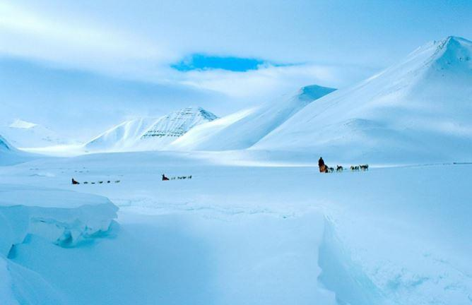De part et d’autre de l’équateur, au contraire des pôles glacés, se situent les zones les plus chaudes. Suivant la loi de Sadi Carnot, loi physique immuable et parfaitement incontournable, les variations de masse volumique induites par les températures régnant en ces lieux vont générer de puissants mouvements atmosphériques (vents, tempêtes...) et hydrauliques (courants marins tels le Gulf Stream, El Nino, les courants Sud et Nord équatoriaux...)
Faisant ici abstraction de la rotation de la planète, l’ensemble de l’atmosphère et des océans est donc ainsi perpétuellement en mouvement, participant de cette manière très efficace à l’équilibre thermique du milieu ambiant, propice à la vie harmonieuse, tant animale que végétale et naturellement : humaine, laquelle dépend directement des deux précédentes. Espaces glacés et espaces très chauds sont donc indispensables au fonctionnement de la machine thermique qu’est la Terre.
De tout ce qui précède, on comprend alors à nouveau aisément que toute perturbation de l’équilibre thermique de la Terre, quelle qu’en soit la cause, ne peut rapidement que se traduire par d’importantes conséquences, difficilement appréciables et encore moins.
L’ORIGINE DU RECHAUFFEMENT CLIMATIQUE... UNE AUTRE HYPOTHESE
Les Gaz à Effet de Serre (GES)
Il est aujourd’hui assez largement admis que le réchauffement continu de l’atmosphère terrestre proviendrait pour l’essentiel de l’accumulation de gaz à effet de serre, tels le dioxyde de carbone (CO2) ou le méthane (CH4), largement produits par les activités humaines, les incendies induits par la déforestation accidentelle ou volontaire, l’élevage intensif, etc.
Effectivement, au milieu du XVIIIè siècle, si l’on considère seulement la teneur en CO2, elle était d’environ 200 ppm (partie par million), soit 200 molécules dans un million de molécules d’air.
En 1958 elle s’établissait à 315 ppm pour atteindre 350 ppm en 1998 et 365 ppm en 2009, soit une croissance annuelle et actuelle d’environ 1 à 1.50 % l’an, autrement dit supérieure aux anciennes estimations. En 2016, elle aurait atteint 403 ppm.
Il est évident que ceci ne peut être sans conséquence car la fixation du carbone par les différents éléments naturels demande du temps.
C’est le cas des océans et des arbres, non que ces derniers ne le fixent pas avec avidité mais la surface boisée dans le monde diminue au rythme d’environ 3% l’an dont environ 7% l’an pour le seul continent africain !..
Suivant la croissance de la population mondiale, celle de la consommation de combustibles d’origine fossile et la déforestation planétaire, on voit immédiatement que l’augmentation de la teneur en GES (Gaz à Effet de Serre), quelles que soient les mesures prises, ne semble pas prête d’être enrayée. 6
Cependant, concernant l’origine des GES, il y a encore beaucoup plus grave...
Le réchauffement de l’atmosphère et des océans entraîne inévitablement, au moins partiellement, la fonte des calottes glaciaires ce qui va comme précédemment explicité dans le sens de la régulation de température de la planète en apportant des frigories. Toutefois, au moins en ce qui concerne l’Antarctique qui est en réalité constitué par un continent recouvert de glace, le réchauffement découvre ainsi des terres imprégnées d’eau douce (permafrost), contenant d’énormes quantités de dioxyde de carbone (CO2), susceptibles de multiplier par deux, voire pl us, l a teneur actuel l e de l’atmosphère, accentuant ainsi les phénomènes destructeurs.
En quelque sorte, la machine thermique planétaire devenant complètement déréglée, les conséquences en seraient alors incalculables. Cette affaire est actuellement prise très au sérieux.
Océans plus ou moins en voie de saturation en carbone, risque de découvrir le permafrost, que reste-t-il alors pour tenter d’enrayer la situation actuelle ?
L’ALBEDO TERRESTRE
Il s’agit ici d’un paramètre plus intuitivement connu du grand public que réellement dans sa mesure et dans son appréciation.
L’albédo terrestre est tout simplement la traduction de la réflexion du rayonnement solaire du sol par un coefficient sans dimension, variant de 0 à 1, autrement dit, les surfaces claires réfléchissant d’une manière naturelle l’infrarouge présentent un albédo théorique de 1, au contraire des surfaces foncées qui absorbent le rayonnement solaire, lesquelles présentent un albédo théorique de 0.
En première conclusion, ceci vérifie à nouveau parfaitement ce qui est précédemment exposé.
À titre de simple exemple, on peut aussi en conclure que sous les tropiques il vaut mieux disposer d’un véhicule automobile ou d’une habitation de couleur très claire que d’une couleur foncée, constat aisément vérifiable... À ce propos, revenant à la Terre, une étude assez théorique montre cependant ce qui suit :
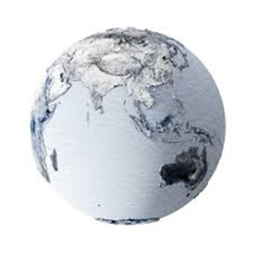
La Terre entièrement recouverte par les océans, soit un albédo de 0.08, la température d’équilibre en surface serait voisine de +2°C.
La Terre entièrement recouverte de neige, soit un albédo de 0.85, la température d’équilibre en surface serait voisine de -77°C.
La Terre entièrement recouverte d’une dense forêt, soit un albédo de 0.20, la température d’équilibre du sol serait voisine de -6°C.
La Terre entièrement recouverte de sable blanc, soit un albédo de 0.30, la température d’équilibre du sol serait voisine de -17°C.
Quelle que soit la fiabilité que l’on accorde à cette étude, elle montre néanmoins immédiatement l’importance que peuvent présenter la couleur et la nature du sol sur lequel le rayonnement solaire vient s’appliquer. À nouveau, on en déduit aussitôt que les conditions de vie dans une zone désertique où sous une dense forêt ne seront absolument pas les mêmes... Ce qui est évident !
UNE AUTRE HYPOTHESE...
Appliquons tout ce qui précède à une autre hypothèse, naturellement sans pour autant rejeter les effets néfastes des gaz à effet de serre sachant cependant et sans entrer dans les détails qu’il n’y a évidemment pas que le dioxyde de carbone, loin de là !..
Il apparaît, sans contestation guère possible que l’albédo terrestre joue un rôle déterminant dans les conditions d’équilibre thermique de la planète. D’ailleurs, à ce propos imaginons un instant les conséquences inévitables qu’aurait le changement de coloration des glaces des pôles, lesquelles se mettraient naturellement aussitôt à fondre !.. Cette observation ramène alors au rôle primordial et incontournable de la forêt mais aussi à celui de sa qualité.
La forêt : source de vie harmonieuse et du développement économique
Observée en altitude, une forêt digne de ce nom se présente comme une surface sombre dont l’albédo est voisin de 0.20.
En période diurne (le jour), il ne peut guère y avoir de colonne d’air ascendant puisque l’évapotranspiration des arbres nécessite de grandes quantités de calories, provenant uniquement que du rayonnement solaire. En quelque sorte, la forêt se comporte alors comme une éponge thermique et sous son couvert, par forte chaleur, il y fait bon séjourner.
En revanche, dès que le soleil disparaît à l’horizon, les calories accumulées durant le jour vont s’évacuer sous forme d’ascendances d’air chaud et humide qui va se condenser en altitude, donnant sous les tropiques les pluies de fin de journée puis le même cycle recommence le jour suivant. C’est ce que l’on appelle les ascendances de restitution.
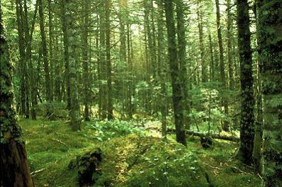Jour et nuit, l’atmosphère terrestre est ainsi verticalement brassée mais également horizontalement puisque ces ascendances ou ces descendances d’air vont également engendrer des courants horizontaux suivant le relief du terrain : le vent.
Si maintenant, pour une raison ou pour une autre, cette même forêt a disparu ou se trouve fortement altérée, l’albédo sera de même modifié, s’établissant plutôt vers 0.4 à 0.6 voire 0.7, entraînant par là un échauffement excessif du sol pendant le jour et un refroidissement idem durant la nuit.
Ainsi, les courants ascendants verticaux seront inversés, autrement dit violemment ascendants en régime diurne et descendant en régime nocturne mais plus faiblement sinon totalement absents car le sol absorbe beaucoup moins de calories que la forêt. Dans ce constat, l’arbre joue un rôle déterminant dont l’évapotranspiration n’est pas le moindre.
Application aux régions tropicales
À titre de simple exemple, en considérant un sujet adulte de 25 m de hauteur, tel le kaïcédra, pour peu que le sol apporte correctement l ’eau nécessaire à son développement, en moyenne journalière la quantité d’eau ainsi évaporée par le végétal est d’environ 500 litres, soit 0.5 m3, valeur minimale.
Toujours en ne considérant qu’un tel arbre tous les 10 m sur un seul hectare, soit 100 arbres, la quantité d’eau annuellement évaporée atteint alors 100 x 0.50 x 365 = 18250 m3, soit 18 250 tonnes d’eau.
Pour un seul km2, le même calcul conduit à 1.825 millions de m3 d’eau l’an.
Pour une forêt de 100 km2, ce qui ne représente jamais que 10 km x 10 km, on obtient alors 182.50 x 106 m3 d’eau, autrement dit, 182.50 millions de m3 d’eau évaporés par année !..
Appliqué à la seule Afrique de l’Ouest, par exemple recouverte de 30 % d’une dense forêt tropicale, le volume atteint est parfaitement considérable puisqu’il se compterait en centaines de milliards de m3 d’eau, volume auquel il conviendrait d’ajouter celui produit par le Maghreb pour peu que la même situation forestière s’y installe. Néanmoins, ce n’est pas tout car il faut alors préciser que l’eau liquide à température ambiante, est dans la nature le corps possédant la plus grande chaleur massique, ce qui signifie la plus grande quantité de calories retenues.
Il devient déjà aisé de percevoir les dégâts induits par la déforestation de l’Afrique puisqu’aujourd’hui cette eau libre n’existe plus ou presque... Toutefois, cette même déforestation ne s’applique malheureusement pas qu’à cette région du globe. En effet, que sont aujourd’hui les sols de tous les pays du tour de la Méditerranée, sinon des terres en voie de désertification, soit : Maghreb, Libye, Égypte, Turquie, Grèce, Balkans en partie, Italie du Sud et centre Espagne.
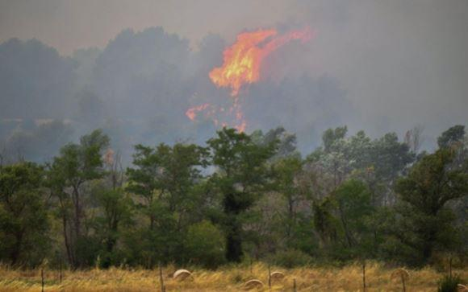Quant au Midi français, les nombreux incendies et l’urbanisation irraisonnable ont rendu bien des lieux autrefois enchanteurs, aujourd’hui dans une situation peu enviable.
Conséquences immédiates de la déforestation africaine
Elles ne sont désormais pas trop difficiles à imaginer car sans eau, que devient la qualité de la vie ?.. Frappant des sols dénudés, le rayonnement infrarouge du soleil est alors largement renvoyé dans l’atmosphère déjà échauffée par le rayonnement incident de l’étoile. Se créent alors d’énormes bulles thermiques à différentes masses volumiques suivant leur température, engendrant suivant ce qui précède des déplacements plus ou moins violents d’où transformation de l’énergie thermique en énergie mécanique (vent, vents de sable, tempêtes, vortex...).
À cela s’ajoute le réchauffement de la mer Méditerranée, voire en bordure de côtes, celui de l’océan atlantique.
Plus au Nord, les dépressions venant de l’océan atlantique et des mers froides entrent alors en conflit avec les bulles thermiques de la partie Sud créant de nouveaux conflits, d’autant plus violents que la différence de température et les volumes en jeu sont importants.
C’est ainsi que l’Espagne, l’Italie, la France, voire un peu plus au Nord l’Allemagne et la Belgique sont désormais le siège de tempêtes régulières, parfaitement dévastatrices au sein desquelles il n’est pas rare de constater des pointes de vent à plus de 200 km/h (55 m/s) accompagnées ou non de violentes pluies.
Les autres rôles de la forêt
Suivant cet exposé, l’on ne saurait passer sous silence quelques autres rôles de la forêt, non sans importance, tels que :
La capture du carbone (CO2...) à tel point que l’on constate depuis quelques décennies dans certaines forêts comme celle des Vosges en
France (frontière avec l’Allemagne) une croissance des arbres supérieure de 30 % par rapport à la situation antérieurement connue.
La filtration de l’atmosphère grâce aux courants aériens convectifs (ascendances, descendances, vent de relief...). Il suffit pour cela de constater la pureté de l’atmosphère dès le lever du jour.
L’absence d’érosion des sols par le ralentissement de l’écoulement gravitaire et la limitation de l’impact des gouttes d’eau pluviale surtout durant les orages.
L’alimentation des nappes phréatiques en eau préalablement en partie filtrée, ceci grâce à ce qui précède car l’infiltration lente dans le sol peut ainsi s’opérer convenablement, au contraire du ruissellement rapide qui érode le sol et entraîne l’humus.
La création d’humus, propice au développement de la faune et de la flore.
La production de bois d’œuvre (menuiserie, constructions, indus trie...) et de chauffage, provenant pour ce dernier de l’entretien des forêts (ébranchage), économisant ainsi l’utilisation de combustibles fossiles, source de sortie de devises, de dépendance nationale et de gaz à effet de serre.
La production de substances médicamenteuses.
Le développement du tourisme, autre importante source d’entrée de devises favorisant ainsi de développement social et économique.
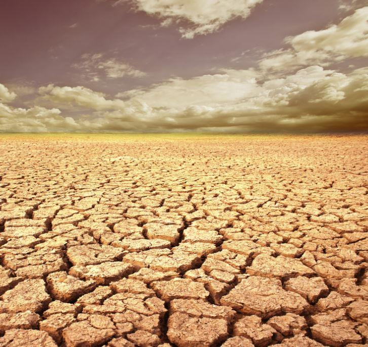L’on ne saurait achever sans également aborder la production d’énergie d’origine hydroélectrique et à ce propos, la situation d’un pays comme le Cameroun mérite aujourd’hui de s’y arrêter quelques instants.
D’une contrée autrefois largement pourvue en forêts tropicales, favorisant un régime quotidien de pluies abondantes, jusqu’à ces dernières décennies le Cameroun exportait de l’électricité grâce à des centrales au fil de l’eau ou à des barrages. Cependant, par suite d’une politique déraisonnable d’exportation de bois tropicaux sans régénération des prélèvements opérés, le Cameroun connaît désormais la sécheresse, les coupures d’électricité, l’élévation de la température diurne dans les zones déforestées entraînant la migration des populations vers la zone côtière avec tout ce que cela signifie et sans doute, à terme, la famine et inévitablement des conflits internes, voire externes avec ses voisins et l’Europe.
Pour tenter de contrer cela, l’énergie électrique provient désormais de centrales thermiques fonctionnant avec des combustibles fossiles et d’importations d’électricité pour l’achat desquelles le pays ne peut que s’endetter un peu plus ou priver sa population d’un minimum de confort.
Il s’agit ici d’un simple exemple local mais qui peut aisément s’appliquer en bien d’autres contrées du globe, telle la Chine par exemple, avec la déforestation des contreforts de l’Himalaya et de régulières calamités qui s’abattent sur les populations.
Les conséquences humaines et économiques
Elles sont, évidemment, très lourdes et ne feront que croître avec la poursuite de la déforestation planétaire et l’augmentation vertigineuse de la population terrestre.
En particulier, quelles que soient les mesures prises par les gouvernements au niveau de la pollution de l’atmosphère, au moins pour les décennies à venir, le réchauffement de la planète ne paraît pas devoir s’arrêter pour autant, en effet :
Pour des considérations écologiques, les pays émergeants ne diminueront pas pour autant leur consommation de combustibles d’origine fossile.
L ’ augmentation de la population terrestre se poursuivra, accentuant proportionnellement sa pression sur le milieu environnant.
Les dégâts de tous ordres consécutifs au déséquilibre thermique de l’atmosphère terrestre se traduiront inévitablement tantôt par des sécheresses à répétition, tantôt par des événements climatiques violents et destructeurs (tempêtes, cyclones et ouragans, vents de poussières, inondations, etc.)
Une large partie de l’Humanité dont l’Afrique en particulier, ne fera que d’accumuler des difficultés de vie mais également les pays dits riches, de plus en plus confrontés à des flots migratoires incontrôlables issus de la misère d’autres contrées. L’histoire montre à loisir que ce genre de situation conduit généralement à des conflits par nature toujours destructeurs en tous domaines ce qui ne peut qu’aggraver les choses.
Destruction de la forêt → Savane → Destruction par le feu → Misère, famines et maladies → Émigration → Bidonvilles → Conflits armés.
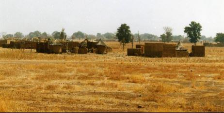
Autour de ce village de l’Afrique de l’Ouest qui grille au soleil il ne reste plus que deux arbres encore dignes de ce nom. Photo. JMT
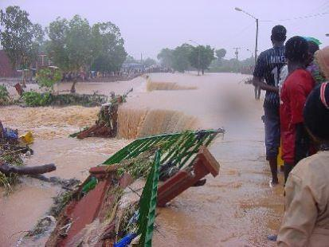
Le résultat de pluies torrentielles dans la capitale du Burkina Faso survenues le 1er septembre 2009.
Elles se reproduiront en 2015
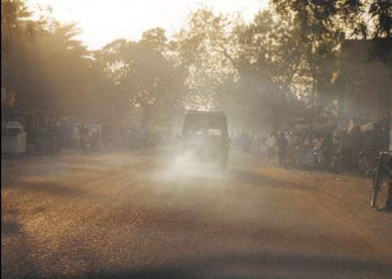
En Afrique de l’Ouest, tempêtes de sable venant du désert et pollution urbaine se complètent pour entraîner de nombreuses pathologies dont en particulier respiratoires
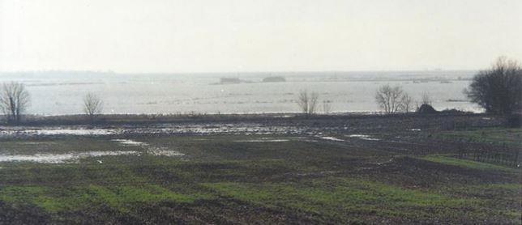
Le 27 février 2010, suite à une violente tempête sur les côtes du Sud Ouest de la France, cette photo prise dans la région de Bordeaux montre que la mer avança en certains lieux de 15 km à l’intérieur 11 des terres. On aperçoit deux bâtiments de fermes qui resteront ainsi isolés durant plusieurs semaines. De nombreux animaux d’élevage périront
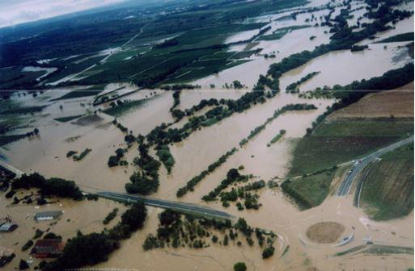
Inondations dans le Sud de la France en septembre 2002. En certains endroits, l’eau montera de plus de 4 mètres. Plusieurs villes et villages en subiront les conséquences
J-M. T.
DU MEME AUTEUR... À LIRE AVEC GRAND INTERET...
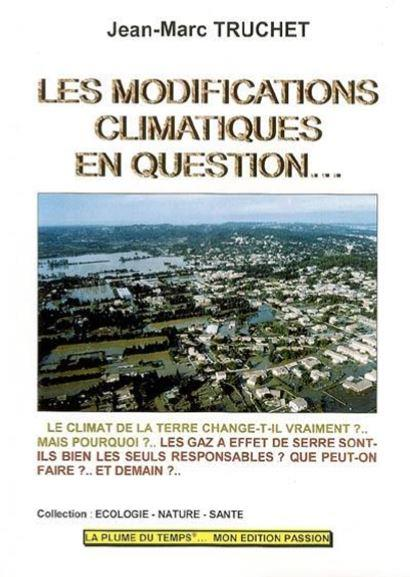Il ne se passe guère de temps sans que les médias rapportent ici ou là, telle ou telle catastrophe provoquée tantôt par des inondations, tantôt par des vents d’une extrême violence. Quant aux glaces des pôles, celles-ci semblent fondre plus vite que prévu... Le climat est-il vraiment en train de changer et quelles en seraient les raisons... L’on parle beaucoup de la pollution et des gaz à effet de serre comme de dioxyde de carbone (CO2) ou le méthane (CH4) mais sont-ils bien les seuls responsables ? Urbanisation mal maîtrisée, erreurs humaines, voies de communications, transports, déforestation, etc. Quels rôles peuvent-ils avoir sur le climat régional et sur celui de la planète ?
Sommes-nous entrés dans un siècle de cataclysmes ?
À toutes ces questions, certes n’est-il pas aisé d‘y répondre mais à partir d’un certain nombre de statistiques et de constats simples, l’on voit immédiatement que dans notre civilisation mécanique, dite moderne, la nature n’est pas cotée en bourse... Cependant, il semble bien que des choses bougent dans l’équilibre de la planète.
Ainsi sont abordés différents thèmes, soit :
Le climat autrefois (de l’an 900 environ à nos jours) - Notions de météorologie et de climatologie - Modifications climatiques ou pas ? Erreurs et conséquences de l’activité humaine - Les combustibles fossiles - La déforestation - La fonte des calottes glaciaires – Des solutions raisonnables - L’énergie solaire - Les agrocarburants - Le biogaz, etc. - Les modifications climatiques en question... Une autre approche - Aujourd’hui l’Afrique, demain d’Europe ? - Que peut-on faire ? - Quelles conséquences pour demain ?
Toutefois, ce n'est pas tout et en ce qui concerne l'Europe, l’influence des conditions climatiques régnant sur le continent africain présentera inévitablement des conséquences majeures plus au Nord. Malgré quelques efforts et une certaine prise de conscience des risques encourus, la déforestation de l’Afrique se poursuit à grands pas, modifiant rapidement localement puis à grande échelle les conditions aérologiques dont les répercussions sociale et politique sont inévitables, entraînant inévitablement des conflits.
Certaines villes d’Afrique de l’Ouest seront-elles encore viables dans 20 ou 30 années ? Si oui, dans quelles conditions humanitaires et à quel coût financier pour ceux qui resteront ?
Quels que soient ses moyens technologiques, l’être humain n’a pas les moyens de rentrer en conflit avec l’astre qui l’héberge et par son incurie, au lieu de profiter de la générosité de la nature, il se crée des difficultés qu’il est alors incapable de surmonter. Dommage...
NOUS SOMMES TOUS CONCERNES...
EAN : 9782913788473 - Nbre. de pages : 220 - Nbre. de photos : 120 - Format : A4 (21 x 29,7 cm) Prix : 30 € (plus frais d’acheminement Poste).
Partager cette page